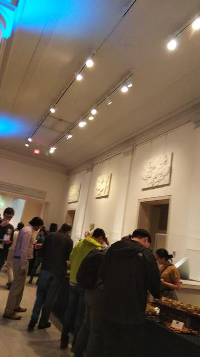

既に大学院を卒業した身ではあるのですが、先日はじめて国際学会であるNAACLに参加しました。
修士で取り組んだ研究について、Workshopで発表するためです。
初海外出張かつ初アメリカなこともあり、同行した研究室の方々に助けられっぱなしの1週間でした。
少しだけ感想をブログに書こうと思います。あまり研究の話は書きません。
会場Minneapolisについて
ミネアポリスは札幌と同じぐらいの緯度にあるミネソタ州の都市です。
映画 ファーゴでのイメージは雪国だったのですが、滞在中は連日カンカン照りの真夏でした。サマータイムなこともあり、夜21時ぐらいまで太陽が登っており、不思議な感覚でした。
ホテル会場近くにオフィスビル街があり、買い物や食事場所には困りませんでした。良い塩梅の都会です。
特にデパートのTarget は日本でいう西友のような安心感があり、何度も通わせていただきました。
本会議の様子
英語のリスニングに自信がなかったのですが、今回のNAACL ではMicrosoft TranslaterによるLiveCaptions(文字書き起こし&翻訳機能)が実装されており、早口で聞き取れない部分も書き起こしを読むことができる素晴らしい状況でした。
翻訳精度もそこそこ良かったです。
またoral発表では、chairとは別にlive twiter 係(?) がいて、発表内容についてtweetしてくれる場合がありました。
Coming up: A live Twitter thread of Session 8B: Machine Learning @NAACLHLT with some awesome papers on vocabulary size, subwords, Bayesian learning, multi-task learning, and inductive biases
— Sebastian Ruder (@seb_ruder) June 5, 2019
自分の研究が有名な研究者のtwitterによって拡散されるのは面白い試みだなあと思います。
ポスター会場はおやつ会場でもあり、15時ぐらいになると
Bidirectional candy sequence #naacl2019 pic.twitter.com/kCWlMJOj3R
— NAACL HLT (@NAACLHLT) June 5, 2019
のようにおやつビュッフェコーナーができます。
コーヒーも飲み放題です。
おやつ以外にも軽食が何度かserveされる機会がありましたが、どれもビーガン向けやグルテンフリーがちゃんと表記されていて、食の多様性を感じました。
日本でもそういった表記が増えて欲しいですね。
Social Eventは Minneapolice museum で行われました。
閉館後の貸切状態で、展示をみることができたのですが、かなり巨大な美術館だったのでまわりきれませんでした。
浮世絵が見たかったのですがみつからず。草間彌生さんの作品は見られました。

ビュッフェ形式のまぜそばが割り箸とともに置いてあって、すごく安心しました。
中華料理に安心させられるアメリカ滞在でした。
会議全体の印象
-
BERT: Pre-training of Deep Bidirectional Transformers for Language Understanding 関連の発表が多い
-
tutorial は "Transfer Learning in Natural Language Processing" の聴講者が多かった印象
-
Keynote "Leaving the Lab: Building NLP Applications that Real People can Use"
- 研究ではなく、実社会でNLPを活用することについて、 textio CEOによる講演
- 研究職以外のNLPerのキャリアパスが現地でも注目されているのだと実感しました
-
- neural生成系のworkshop
- ほぼ招待講演(有名人)で本会議レベルのスポンサーがついていた
- Workshop on Narrative Understandingにもスポンサーがついていて、workshopによって規模が全然違うことを知りました。今後のトレンドを追う上で、workshopは侮れない存在かもしれない。
気になった発表
-
Text Classification with Few Examples using Controlled Generalization
- 少ない文書データでも文書分類する話
- メインのアイデア Category Builderは https://aclweb.org/anthology/papers/S/S18/S18-2031/ の様子
-
MathQA: Towards Interpretable Math Word Problem Solving with Operation-Based Formalisms
- 数学のデータセット https://math-qa.github.io/math-QA/
-
A Structural Probe for Finding Syntax in Word Representations
- ELMoやBERTがsyntaxを捉えているのか検証する話
- 言語モデルの解釈性はこれからも課題な気がした
感想とこれから
-
英語の能力不足を痛感しました。
- 特に店員との会話で痛感しました。基本的に単語でしか受け答えできなかったのが悔しい。
- ネイティブの早口は聞き取りが難しい。人によっては優しく言い換えてくれるが、人によっては手加減を知らない様子で復唱してくる。
- ホテルのテレビで見られるDisneyチャンネルだけが安定した優しさでした。(比較的ゆっくり発話してくれる)
-
NLPの研究から離れることになりますが、この経験を活かして社会人をやっていきたいです。がんばります。